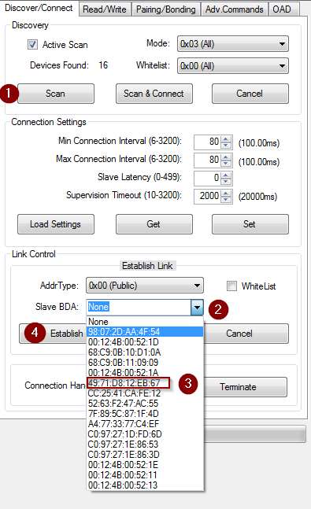
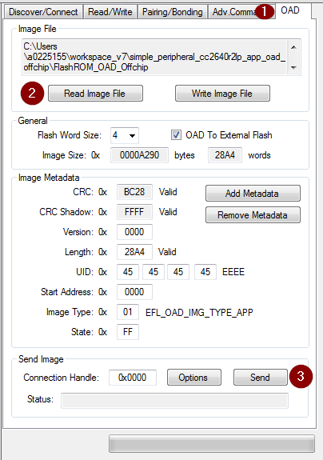
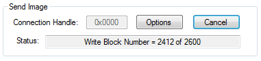
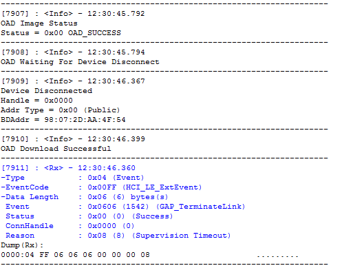

Appendix¶
This section will cover various tutorials that are helpful throughout the OAD process. It is not intended to be read sequentially, but instead referenced from other sections.
Generating Linker Command File for OAD Off-chip¶
Understanding of OAD Concept Overview, particularly what are the Linker Responsibilities is recommended.
This section describes how to convert a standard SDK linker command file to be compatible with the TI OAD Ecosystem for both CCS and IAR linkers.
Modifications for CCS (cc26xx_app.cmd)¶
Allocation of Flash for Metadata Vector and App Start
FLASH_APP_BASEdefines where the linker begin to place read and execute application code and data because of the following section:
Instead of
originbeing assigned toFLASH_APP_BASE, assign to a new undefined symbolFLASH_OAD_IMG_START.
Now to define the symbol, we need to shift the starting point over 16 bytes. The original linker file code is:
Replace with the following which defines
FLASH_OAD_IMG_STARTrelative to the symbolFLASH_OAD_IMG_HDR_SIZE, or 16 bytes.
Preservation of Page 31 (BIM + CCFGs)
Due to the previous step, we can violate this rule. Look at the following:
For example, if
ICALL_STACK0_STARTisn’t defined (for a Library build) then the starting addressFLASH_OAD_IMG_STARTbut the length isFLASH_LEN - FLASH_PAGE_LENwhich is 128 kB - 4 kB. The problem is there is actually less space available and we are over allocating. Rewritten, the starting address forFLASHis0x010, the ending address is0x1F010, cutting into the last page, violating this rule.To fix this, simply subtract off the size of the meta data vector by using the previously defined
FLASH_OAD_IMG_HDR_SIZE.The fix will look like:
The final range for
FLASHifICALL_STACK0_STARTisn’t defined (like in a Library build), will be0x010to0x1F000. In other words, all the way until the last page.Warning
For App only OAD or App + Stack non-library OAD, you will have to build the stack image first or manually define
ICALL_STACK0_STARTso the stack image’s entry point doesn’t get corrupted.Alignment of Interrupt Vector Table see Using a custom reset vector address for your application
This is already handled by the existing linker file with:
Page Alignment of OAD Image
The OAD image for a library OAD build with SNV will always be 31 pages. No page alignment is necessary. OAD Image Tool also will pad with 0xFF to the next page when producing an output binary.
Modifications for IAR (cc26xx_app_and_stack.icf)¶
Allocation of Flash for Metadata Vector and App Start
We want the
FLASHregion to defines where the linker should place application and stack code and data.Replace:
With:
Next redefine
FLASHsuch that it goes from a undefined symbolOAD_FLASH_STARTtoFLASH_ENDwhich is defined to the end of page 30.OAD_FLASH_STARTwill represent where application/stack code may begin, after the header
Then define the symbols that accounts for the OAD metadata:
Lastly define
OAD_FLASH_START, accounting for the metadata vector as well as the interrupt table:
Note
To fully define
OAD_FLASH_START, the interrupt vector table needs to be accounted for. See the next step.Alignment of Interrupt Vector Table see Using a custom reset vector address for your application
The Interrupt Vector Table needs to be placed in order for the application to function correctly. Normally, the table would start at the beginning of flash; however, due to the metadata vector, the table needs to be moved.
First define symbols to account for the table:
Note
Symbols
OAD_HDR_STARTandOAD_HDR_SIZEare defined in the previous step.Next define the region based off the symbols defined:
Lastly, for memory placement, the following needs to be added so the
.intvecsection gets placed correctly:
Preservation of Page 31 (BIM + CCFGs)
Although the project shouldn’t be building the
ccfg_app_ble.cfile, thus there shouldn’t be anything to link, removal of the following lines is recommended:
BIM should be building and linking the CCFGs.
The previous steps ensure that page 31 isn’t used by linker.
Page Alignment of OAD Image
The OAD image for a library OAD build with SNV will always be 31 pages. No page alignment is necessary. OAD Image Tool also will pad with 0xFF to the next page when producing an output binary.
Stack Side Changes for OAD Project¶
Generally, no stack side changes to enable OAD are required. However, if desired, depending on the OAD configuration type, stack side changes may be done in the project.
The configurations that may a stack side change are configurations where the stack image is separate from the application image. In other words, App only and Stack only for Off-chip. No changes on stack project in Library OAD configurations should be done.
One possible change is to page align the stack, such that
the entry point is always the same address at the beginning
of a page. To force the linker to be page aligned, simply
add PAGE_ALIGN=1 to the linker defines on the stack
project.
In the case of a Stack only OAD configuration, the stack OAD project can be page aligned to allow for the additional features (up to the boundary). As long as the entry point is the same, the application will function normally.
Note
Modifying the Stack project to meet your applications needs is highly encouraged. For example, adding/removing SNV Using Simple NV for Flash Storage or changing Stack Configurations, should be done to meet application needs.
This topic of this section is stack side changes in order to work with the TI OAD ecosystem.
Generating Metadata Vector for OAD Image¶
The OAD_Image_Tool is designed to generate a metadata vector and insert it into a given image, to produce an OAD ready image. An OAD ready image can be a hex file or a binary that contains metadata for the target to interpret.
The OAD_Image_Tool can be found as a Python script or as a binary inside
SimpleLink CC2640R2 SDK installation. It is located in BLE Examples Support Files in the Tools
folder.
To view usage instructions for the tool, run the Python script or the
binary with the -h argument passed in.
For example, to generate an OAD ready application image, invoke the tool with:
The out.hex file will be an OAD ready image with the metadata to tell
the OAD Target that it’s an Application image for Off-chip OAD.
Generating a Production Image for OAD¶
A production image is one that contains the app, stack, and BIM images combined into a single file. Production images are generally used when an OAD enabled device is initially programmed at the manufacturing facility. Production images can also be useful for debugging as all of the information is contained in a single file.
TI has included a Python based OAD_Image_Tool that can perform a variety of operations on OAD ready hex files in the SimpleLink CC2640R2 SDK. It will be used to generate a production OAD image.
Currently, the oad_image_tool is already being invoked as a post build step on oad_target_app, and simple_peripheral builds for on and off-chip OAD.
CCS Update OAD Image Tool Build Step¶
The image below shows how to edit the CCS post build step for the OAD image tool. This menu can be accessed by right clicking the project –> properties.
Figure 88. Update OAD Image Tool Post Build Step CCS
IAR Update OAD Image Tool Build Step¶
The image below shows how to edit the IAR post build step for the OAD image tool. This menu can be accessed by right clicking the project –> options.
Figure 89. Update OAD Image Tool Post Build Step IAR
Generate production Off-Chip using CCS¶
The following steps detail how to generate an off-chip OAD production image which contains app, stack, and the off-chip BIM.
Warning
The following steps assume you have already followed the steps 1-2 of the Out of the Box Demo (Off-Chip App Only OAD) for CCS.
Add the following code to the
simple_peripheral_cc2640r2lp_app_oad_offchipproject’s post build steps.${TOOLS_BLE_DIR}/oad/oad_image_tool ${ProjName}.hex -t offchip -i app --imgVer 0 -ob ${ProjName}.bin -m 0x0000 --r 0x0000
Generate production Off-Chip Image using IAR¶
The following steps detail how to generate an off-chip OAD production image which contains app, stack, and the off-chip BIM.
Warning
The following steps assume you have already followed the steps 1-2 of the Out of the Box Demo (Off-Chip App Only OAD) for IAR.
Add the following code to the app project’s post build steps.
$TOOLS_BLE_DIR$\oad\oad_image_tool.exe $PROJ_DIR$\FlashROM_OAD_Offchip\Exe\$TARGET_BNAME$.hex -t offchip -i app --imgVer 0 -ob $PROJ_DIR$\FlashROM_OAD_Offchip\Exe\$TARGET_BNAME$.bin -m 0x0000 --r 0x0000
Using a custom reset vector address for your application¶
The projects within the SimpleLink CC2640R2 SDK will build the TI-RTOS kernel as a pre-build step within the application. This prebuild step is called configuro. During the configuro stage it is possible to relocate your reset vectors. This is required for OAD applications to make room for the metadata vector at the beginning of the image space. For more information about configuro, please see RTSC Configuro Page.
Note
You may need to change OAD_IMG_E=1 in the images below
to OAD_IMG_A=1 or OAD_IMG_B=1 depending on your use case.
Change Reset Vector Address in IAR¶
IAR treats configuro as a prebuild action. These actions can be found by right clicking the project –> Build Actions –> Pre-build command line. See the image below for more information.
Change Reset Vector Address in CCS¶
CCS has native RTSC/Configuro support built into the project. These actions can be found by right clicking the project –> Build –> XDCtools –> Advanced Options. See the image below for more information.
Changing Application Data to Verify an OAD¶
It can be difficult to verify OAD without making application changes. A quick and easy way to change your application image before sending over the air is to change it’s scan response data.
This way, a successful OAD can be observed via the change in scan response data. See below for steps on how to change this.
- A good test is to change the scan response data as below in
simple_peripheral.c
Warning
If you change of scan response data you must also change it’s length. See line 5 of the code snippet above.
Using BTool and CC2640R2 Launchpad as an OAD Downloader¶
This section will describe how to use setup and use BTool, to perform an OAD.
Tip
BTool is a very feature-rich application. This guide only seeks to document the OAD functionality of BTool.
Warning
Use the BTool included with SimpleLink CC2640R2 SDK, older versions may not have support for OAD.
BTool Setup¶
BTool requires a CC2640R2 Launchpad running the host_test application with
POWER_SAVING disabled connected to the PC. Steps on how to setup a
CC2640R2 Launchpad to work with BTool are listed below. See OAD Topology Overview for more
information.
- Navigate to the install location of the SimpleLink CC2640R2 SDK.
- Within the SimpleLink CC2640R2 SDK open the
\examples\rtos\CC2640R2_LAUNCHXL\ble5stack\hexfilesfolder. - Open Smart RF Flash Programmer 2.
- Load the OAD Downloader CC2640R2 Launchpad with the
cc2640r2lp_host_test.heximage.
BTool OAD Verify Advertising¶
BTool can be used to scan and discover OAD device. You can verify your device is advertising by following one of the options below.
- Advertisement can be verified in one of two ways:
- If you know your device’s address (can be checked via Smart RF Flash Programmer 2) you can click the scan button and verify it appears in the “Slave BDA” combo box.
- If you don’t know your device’s address, you can change it’s advertisement data (described in Changing Application Data to Verify an OAD). From there, scan the scan button and look in the BTool log window during scanning to verify the device with the custom advertising data appears.
BTool OAD Procedure¶
Open BTool, and connect to your device. See the image below for steps.
Figure 92. Connecting to a device using BTool
Select to the OAD tab in BTool and initiate the OAD process. See the image below for instructions
Attention
Be sure to point BTool to the *_oad.bin file generated by the oad image tool post build step. This file contains the metadata.
Figure 93. Initiating an OAD transfer via BTool
Note
If BTool from another Software Development Kit is used then the OAD Transfer Tab may not exist. Use the BTool that is included with SimpleLink CC2640R2 SDK
OAD process will continue as below
Figure 94. OAD transfer via BTool
BTool will report success
Figure 95. Successful OAD transfer using BTool